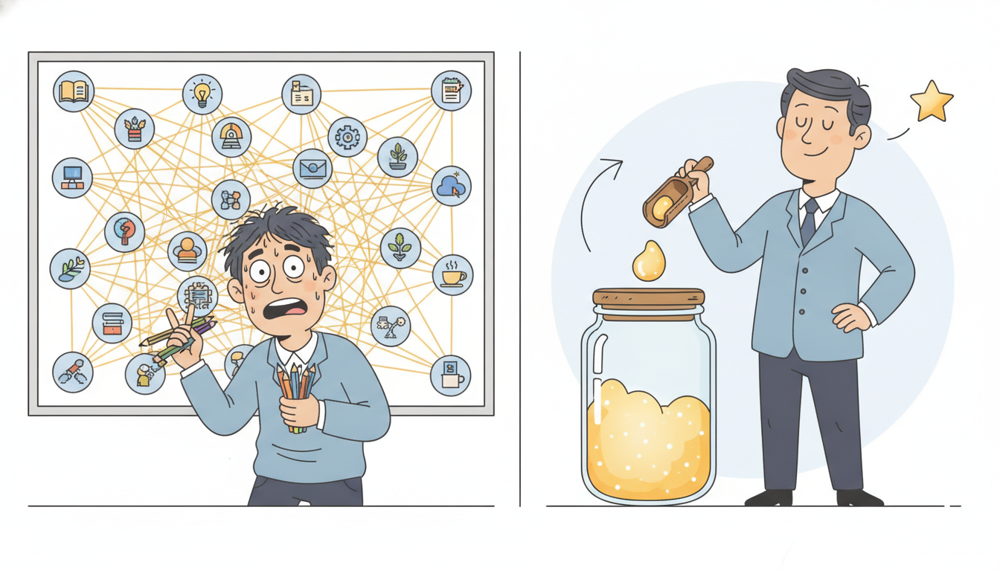

"For years they told me I was an attention mechanism, all softmax and quadratic glory, comparing every token to every other token like a gossip who never forgets a face. Then someone dropped the softmax, and I discovered the truth: under the costume I was a recurrence the whole time, carrying one little matrix of state forward, step by step, the way an RNN does. I had been a state-space model in a fancier coat."
A Linear Attention That Is Secretly a Recurrence
Standard attention is quadratic because the softmax couples every query to every key through a normalization that cannot be factored. Remove the softmax and replace it with a kernel feature map $\phi$ applied separately to queries and keys, and the entire attention computation factors into a running sum: the output at position $t$ becomes $\phi(\mathbf{q}_t)$ contracted against a state $\mathbf{S}_t = \sum_{i \le t} \phi(\mathbf{k}_i)\mathbf{v}_i^\top$ that is updated by one rank-one addition per step. That single algebraic move is the hinge of this section. It means linear attention is a linear recurrence with a matrix-valued state, and a linear recurrence has two faces: a parallel form that processes the whole sequence at once for fast training, and a recurrent form that carries a fixed-size state for $O(1)$-per-token, $O(1)$-memory inference. RWKV and RetNet are two production-grade architectures built on exactly this template, each adding a decay structure that gives the state a controllable memory horizon and the model a positional sense of time. This section derives the duality, shows how RWKV's WKV time-mixing and RetNet's retention each instantiate it, places them beside the structured state-space models of Sections 13.1 and 13.2, and implements linear attention in both its parallel and recurrent forms from scratch, proving numerically that they compute the identical function before collapsing the pair to a library call. You leave seeing softmax-free attention, RWKV, RetNet, and SSMs as one family: linear recurrences wearing different parameterizations.
In Section 13.1 we built structured state-space models whose core was a linear recurrence $\mathbf{s}_t = \mathbf{A}\mathbf{s}_{t-1} + \mathbf{B}\mathbf{x}_t$ that could be unrolled as a convolution for parallel training and run as a recurrence for streaming inference. That duality, one model with a parallel face and a recurrent face, is the protagonist of this section too, but arriving from the opposite direction. There we started from a continuous linear system and discretized it. Here we start from the Transformer attention of Section 12.5, the workhorse of Part III, and ask what happens to its cost when we drop the one nonlinearity that makes it quadratic. The answer lands us back in the same place: a linear recurrence with a matrix-valued state. By the end of the chapter, Section 13.6 will close the loop and show that SSMs, linear attention, RWKV, and RetNet are literally the same computational object under four different parameterizations. This section builds the linear-attention half of that bridge. We use the unified notation of Appendix A: $\mathbf{q}_t, \mathbf{k}_t, \mathbf{v}_t$ for the query, key, and value at position $t$, $\mathbf{o}_t$ for the attention output, $d$ for the head dimension.
The stakes are practical, not merely aesthetic. Standard attention costs $O(T^2 d)$ time and, at inference, an $O(T)$ key-value cache that grows without bound as a generation lengthens. For the long sequences that motivate this entire chapter, a year of hourly readings, a high-frequency tape, a book-length context, that quadratic wall is exactly what we are trying to climb. Linear attention and its descendants trade a small amount of expressive power for a recurrence that trains in parallel like a Transformer yet generates in constant time and constant memory per token like an RNN. That is a genuinely new point on the design space, and understanding why it is possible is understanding the duality this section is built around.
The four competencies this section installs are these: to rewrite softmax-free attention as a running-sum recurrence and read off both its parallel-train and recurrent-infer forms; to recognize RWKV's WKV time-mixing and channel mixing as a decayed linear recurrence with an RNN-like inference mode; to state RetNet's retention mechanism in its parallel, recurrent, and chunkwise forms and explain the role of its decay-based positional structure; and to see all of these, together with the SSMs of Sections 13.1 and 13.2, as one linear-recurrence family, the unifying picture that Section 13.6 formalizes.
1. From Softmax Attention to a Linear Recurrence Intermediate

Section 12.5 built scaled dot-product attention and counted its cost: forming the full $T \times T$ matrix of query-key scores is $O(T^2 d)$ work and $O(T^2)$ memory at training time, and at inference each new token must attend over a key-value cache that grows linearly with everything generated so far. We noted there that this quadratic scaling is the Transformer's defining weakness on long sequences and flagged that Part III would return to climb it. This section is that return. The single structural culprit, identified in 12.5 and dissected again below, is the softmax normalization that couples every query to every key. Remove it and the whole cost structure changes character.
Recall the attention output from Section 12.5. With a causal mask, the output at position $t$ is a softmax-weighted average of the value vectors at positions $i \le t$, where the weights come from query-key similarities:
$$\mathbf{o}_t = \frac{\sum_{i=1}^{t} \exp(\mathbf{q}_t^\top \mathbf{k}_i)\,\mathbf{v}_i}{\sum_{i=1}^{t} \exp(\mathbf{q}_t^\top \mathbf{k}_i)}.$$The reason this is quadratic is printed in the formula: the scalar weight $\exp(\mathbf{q}_t^\top \mathbf{k}_i)$ binds the query at $t$ and the key at $i$ together inside a single nonlinearity, the exponential, that does not factor into a part depending only on $\mathbf{q}_t$ times a part depending only on $\mathbf{k}_i$. Because it does not factor, we are forced to materialize the similarity for every one of the $T^2$ query-key pairs. The softmax is the entire source of the quadratic cost.
The linear-attention idea, introduced by Katharopoulos and colleagues in 2020, is to replace the exponential similarity with a factored one. Choose a feature map $\phi: \mathbb{R}^d \to \mathbb{R}^{m}$ and approximate $\exp(\mathbf{q}_t^\top \mathbf{k}_i) \approx \phi(\mathbf{q}_t)^\top \phi(\mathbf{k}_i)$. The point of $\phi$ is that the similarity now splits: it is an inner product of one vector built from the query alone and another built from the key alone. A common choice is the elementwise $\phi(\mathbf{u}) = \mathrm{elu}(\mathbf{u}) + 1$, which keeps the features positive so the denominator stays well behaved. Substituting and using the associativity of the sums:
$$\mathbf{o}_t = \frac{\sum_{i=1}^{t} \big(\phi(\mathbf{q}_t)^\top \phi(\mathbf{k}_i)\big)\,\mathbf{v}_i}{\sum_{i=1}^{t} \phi(\mathbf{q}_t)^\top \phi(\mathbf{k}_i)} = \frac{\phi(\mathbf{q}_t)^\top \sum_{i=1}^{t} \phi(\mathbf{k}_i)\,\mathbf{v}_i^\top}{\phi(\mathbf{q}_t)^\top \sum_{i=1}^{t} \phi(\mathbf{k}_i)}.$$The decisive step is pulling $\phi(\mathbf{q}_t)$ out of the sum over $i$, which the factorization permits and the softmax forbade. What remains inside the sums no longer depends on $t$ except through the running upper limit. Define a matrix-valued state and a vector-valued normalizer that accumulate over positions:
$$\mathbf{S}_t = \sum_{i=1}^{t} \phi(\mathbf{k}_i)\,\mathbf{v}_i^\top \in \mathbb{R}^{m \times d}, \qquad \mathbf{z}_t = \sum_{i=1}^{t} \phi(\mathbf{k}_i) \in \mathbb{R}^{m}.$$Both are cumulative sums, so each obeys a one-line recurrence: add the current term to the previous total. That is the entire content of linear attention. The model is a linear recurrence with a matrix-valued state $\mathbf{S}_t$, updated by a rank-one outer product per step, and read out by a contraction with the current query feature:
$$\boxed{\;\mathbf{S}_t = \mathbf{S}_{t-1} + \phi(\mathbf{k}_t)\,\mathbf{v}_t^\top, \qquad \mathbf{z}_t = \mathbf{z}_{t-1} + \phi(\mathbf{k}_t), \qquad \mathbf{o}_t = \frac{\phi(\mathbf{q}_t)^\top \mathbf{S}_t}{\phi(\mathbf{q}_t)^\top \mathbf{z}_t}.\;}$$This is the recurrent (inference) form: carry a fixed-size state $\mathbf{S}_t$ of shape $m \times d$, update it with one outer product, read out with one matrix-vector product, all independent of how many tokens have already gone by. Generation costs $O(md)$ time and $O(md)$ memory per token, constant in the sequence length, in place of the growing key-value cache of softmax attention. The same equations, read across the whole sequence at once rather than step by step, give the parallel (training) form: compute all $\phi(\mathbf{k}_i)\mathbf{v}_i^\top$ terms and take a cumulative sum, which a framework parallelizes across positions exactly as it parallelizes the SSM scan of Section 13.2. One model, two faces.
It is worth stating the cost ledger explicitly, because the whole motivation lives in it. The recurrent form's state $\mathbf{S}_t$ has shape $m \times d$, fixed once the head dimensions are chosen, so generating a new token costs exactly one outer product ($O(md)$), one state addition ($O(md)$), and one contraction ($O(md)$), with not a single term that depends on $t$. Contrast softmax attention, where token $t$ must compute a similarity against all $t$ stored keys, an $O(td)$ operation that grows as the generation lengthens, on top of a key-value cache whose memory is $O(td)$. Over a full length-$T$ generation, softmax attention pays $\sum_t O(td) = O(T^2 d)$, while linear attention pays $\sum_t O(md) = O(Tmd)$, linear in $T$. The asymptotic gap is the entire reason this family exists, and it is the same $O(T)$-versus-$O(T^2)$ improvement that the convolutional and state-space views of this chapter chase from their own directions.
One caveat sets honest expectations. The feature map $\phi$ is an approximation to the exponential kernel, not an equality, so linear attention is not a drop-in numerical match for softmax attention; it is a different, cheaper attention whose quality depends on the feature map. Early feature maps lost accuracy on language tasks, which is precisely the gap that RWKV and RetNet close with better-designed recurrences and decay structure. What is exact and unconditional is the duality: for any fixed $\phi$, the parallel and recurrent forms compute the same function, bit for bit up to floating-point order of operations. That equivalence is the load-bearing fact, and it is what we prove in code.
The whole section rests on one substitution. Softmax attention couples queries and keys through $\exp(\mathbf{q}^\top\mathbf{k})$, which does not factor, forcing an $O(T^2)$ pairwise computation. Replacing it with a factored kernel $\phi(\mathbf{q})^\top\phi(\mathbf{k})$ lets you pull the query out of the sum over past keys, leaving a running sum $\mathbf{S}_t = \mathbf{S}_{t-1} + \phi(\mathbf{k}_t)\mathbf{v}_t^\top$. A running sum is a linear recurrence with a matrix-valued state. So linear attention is not a different species from the state-space models of Section 13.2; it is the same species, a linear recurrence, reached from the attention side instead of the dynamical-system side. The recurrence has a parallel face for training and a recurrent face for $O(1)$ inference, and the rest of this section is variations on which decay and which feature map you stamp onto that one template.
2. RWKV: An RNN-Transformer Hybrid Advanced
RWKV (Peng and colleagues, 2023, the name stands for the four core symbols R, W, K, V) takes the linear-recurrence template of subsection one and adds the one ingredient plain linear attention lacks: a learned decay that lets the state forget the distant past at a controllable rate. Where linear attention accumulates an undamped sum $\mathbf{S}_t = \mathbf{S}_{t-1} + \phi(\mathbf{k}_t)\mathbf{v}_t^\top$, RWKV weights each past contribution by an exponentially decaying factor, so a position $s$ steps back is discounted by roughly $e^{-sw}$ for a learned per-channel decay $w$. This is the same exponential-decay positional structure we will meet again in RetNet, and it is what gives the recurrence a finite effective memory rather than an ever-growing flat sum.
RWKV is built from two alternating sublayers, mirroring the attention-then-feedforward structure of a Transformer block but with both pieces made recurrent. The first is time mixing, which carries information across positions through the WKV recurrence; the second is channel mixing, a position-wise gated feedforward that mixes across feature channels with no cross-time interaction. The time-mixing output for a channel is a decayed, key-weighted average of values, which in its numerically-stabilized recurrent form reads
$$\mathrm{wkv}_t = \frac{\,\mathbf{a}_{t-1} + e^{\,u + k_t}\,v_t\,}{\,\mathbf{b}_{t-1} + e^{\,u + k_t}\,}, \qquad \mathbf{a}_t = e^{-w}\mathbf{a}_{t-1} + e^{\,k_t}v_t, \qquad \mathbf{b}_t = e^{-w}\mathbf{b}_{t-1} + e^{\,k_t},$$where $w$ is the learned channel-wise decay (the W), $u$ is a learned bonus that gives the current token extra weight, $k_t$ and $v_t$ are the key and value (the K and V), and $\mathbf{a}_t, \mathbf{b}_t$ are the running numerator and denominator states, the direct analogues of $\mathbf{S}_t$ and $\mathbf{z}_t$ from subsection one with a decay $e^{-w}$ multiplying the carried state. The receptance $\mathbf{r}_t = \sigma(\cdot)$ (the R) is a sigmoid gate that decides how much of the mixed signal passes through, the role attention's softmax weights play in a standard block. The output is $\mathbf{o}_t = \mathbf{r}_t \odot \mathrm{wkv}_t$ projected out.
The payoff is precisely the duality of subsection one, now in a competitive language model. Because the WKV recurrence is linear in its state, the whole sequence can be computed in a parallelizable form during training, so RWKV trains with Transformer-like throughput on a GPU. Because that same recurrence carries only the fixed-size pair $(\mathbf{a}_t, \mathbf{b}_t)$ forward, inference is pure RNN: each new token costs $O(d)$ time and $O(d)$ memory regardless of context length, with no key-value cache to grow. RWKV was the first architecture to demonstrate this combination at multi-billion-parameter scale on language modeling, reaching quality comparable to similarly-sized Transformers while generating in constant memory per token.
Strip RWKV to its skeleton and it is the linear-attention recurrence of subsection one with one addition: the carried state is multiplied by a learned decay $e^{-w}$ at every step before the new contribution is added. That decay is the difference between a memory that grows without bound (plain linear attention) and one with a finite, learnable horizon (RWKV). The receptance gate $\mathbf{r}_t$ supplies the input-dependent gating that a bare linear recurrence lacks, and the channel-mixing sublayer supplies the cross-feature mixing that the feedforward block supplies in a Transformer. Time mixing carries information across time with a fixed-size state; channel mixing mixes features within a position. Train in parallel, infer as an RNN: the same two-faced bargain, dressed for language modeling.
RWKV is the architecture that refuses to pick a side in the great RNN-versus-Transformer debate and instead carries both passports. On training day it shows up dressed as a Transformer, processing the whole sequence in parallel and soaking up GPU throughput. At inference time it changes in the phone booth and emerges as an RNN, carrying one small fixed-size state and generating tokens at constant cost no matter how long the conversation has run. The community joke writes itself: it is the only model that can answer "are you an RNN or a Transformer?" with a perfectly honest "yes".
3. RetNet: The Retention Mechanism Advanced
RetNet (Sun and colleagues, 2023) reaches the same linear-recurrence template from a more explicitly attention-flavored direction, and contributes the cleanest statement of why these models have three computational forms rather than two. Its core operation, retention, replaces the softmax with a fixed exponential decay applied along the sequence. The parallel form looks almost exactly like attention with the softmax removed and a decay mask inserted:
$$\mathbf{O} = \big(\mathbf{Q}\mathbf{K}^\top \odot \mathbf{D}\big)\mathbf{V}, \qquad \mathbf{D}_{ti} = \begin{cases} \gamma^{\,t-i} & i \le t \\ 0 & i > t \end{cases}$$where $\gamma \in (0,1)$ is a per-head decay constant and $\mathbf{D}$ is a causal mask whose entries decay geometrically with the distance $t - i$ between query and key. The decay $\gamma^{t-i}$ is RetNet's positional structure: instead of adding learned position embeddings, the model encodes "how long ago" directly into the strength of each interaction, so recent positions count more than distant ones by a fixed multiplicative schedule. This is the same exponential discounting that RWKV applies through $e^{-w}$ and that an SSM applies through its state matrix $\mathbf{A}$; RetNet just writes it as an explicit mask on the attention matrix.
The decay mask is also RetNet's answer to a question every attention model must settle: how does the model know when a token occurred? Softmax Transformers bolt on a separate positional encoding (sinusoids or rotary embeddings) because the bare dot product is permutation-invariant. Retention bakes position into the mechanism itself: the factor $\gamma^{t-i}$ is monotone in the gap $t - i$, so a token's influence fades smoothly with age and the model reads distance directly off the interaction strength. This is a more parsimonious design, no extra parameters, no separate embedding table, and it generalizes more gracefully to sequences longer than those seen in training, because the decay is defined for any gap rather than learned per absolute position.
Because the decay factorizes as $\gamma^{t-i} = \gamma^{t}/\gamma^{i}$, the same retention admits a recurrent form. Carry a matrix-valued state $\mathbf{S}_t$ and update it with a decay-then-add step, then read out with the current query:
$$\mathbf{S}_t = \gamma\,\mathbf{S}_{t-1} + \mathbf{k}_t\mathbf{v}_t^\top, \qquad \mathbf{o}_t = \mathbf{q}_t^\top \mathbf{S}_t.$$This is exactly the linear-attention recurrence of subsection one with a decay $\gamma$ on the carried state and the feature map taken as the identity (no normalizer, since retention drops the denominator). The parallel form trains fast; the recurrent form generates in $O(d^2)$ time and memory per token, constant in context length. RetNet's distinctive third contribution is the chunkwise form, a hybrid that splits the sequence into chunks, runs the parallel form within each chunk, and the recurrent form across chunks by carrying the state $\mathbf{S}$ from one chunk to the next. This gives the best of both: parallel throughput inside a chunk and a fixed-size state between chunks, so a very long sequence is trained in $O(T)$ total work with bounded memory, neither the $O(T^2)$ of full parallel attention nor the strict sequential dependency of pure recurrence. The chunkwise form is the practical default for training RetNet on long contexts, and it is the same idea that the chunked scans of Section 13.2 use for SSMs.
Retention is the rare mechanism that lets you choose your computational personality without changing the answer. Feeling parallel and flush with GPU memory? Run the matrix form and let the tensor cores roar. Deployed on a tiny edge chip with a forever-stream? Run the recurrent form and carry one little state. Somewhere in between, training on book-length contexts? Run chunkwise and have it both ways. It is the same function wearing three outfits, and the only thing you are really choosing is how you would like to spend your memory and your parallelism budget that afternoon.
| Form | Computation | Time | Best for |
|---|---|---|---|
| parallel | $(\mathbf{Q}\mathbf{K}^\top \odot \mathbf{D})\mathbf{V}$, decay mask $\mathbf{D}_{ti}=\gamma^{t-i}$ | $O(T^2 d)$ | training on short or moderate $T$ |
| recurrent | $\mathbf{S}_t = \gamma\mathbf{S}_{t-1} + \mathbf{k}_t\mathbf{v}_t^\top$, $\;\mathbf{o}_t = \mathbf{q}_t^\top\mathbf{S}_t$ | $O(d^2)$ per token | autoregressive inference, $O(1)$ memory |
| chunkwise | parallel within chunk, recurrent across chunks (carry $\mathbf{S}$) | $O(T d^2)$ total | training on long $T$ with bounded memory |
Linear attention, RWKV, and RetNet opened a flood of softmax-free sequence models that the 2024 to 2026 literature has been refining and unifying at speed. RWKV itself advanced through RWKV-5 and RWKV-6 ("Eagle" and "Finch", Peng and colleagues, 2024), which replace the scalar per-channel decay with a matrix-valued, data-dependent decay, narrowing the remaining quality gap to Transformers. Gated Linear Attention (GLA, Yang and colleagues, 2024) and the hardware-efficient "chunk-parallel" training kernels in the flash-linear-attention library made data-dependent gating trainable at scale, and Mamba-2 (Dao and Gu, 2024) proved a formal "state-space duality" showing selective SSMs and a class of masked linear attention are the same computation, which is exactly the bridge Section 13.6 builds. DeltaNet and its parallelized 2024 to 2025 variants add a delta-rule (fast-weight) update that lets the state overwrite as well as accumulate, improving associative recall. The throughline for 2026: a single linear-recurrence template, differentiated by its decay and its gating, now spans architectures that were proposed independently, and hybrid stacks that interleave a few full-attention layers with many linear-recurrence layers are the emerging recipe for long-context models.
4. The Unifying Picture: One Recurrence, Four Parameterizations Advanced
Stand back from the three mechanisms and a single shape is visible through all of them, the shape that also describes the structured state-space models of Sections 13.1 and 13.2. Every one of these models carries a state forward through a linear recurrence of the form "decay the old state, add a contribution from the new input, read out by a projection". Written generically:
$$\mathbf{S}_t = \mathbf{G}_t \odot \mathbf{S}_{t-1} + \mathbf{k}_t\mathbf{v}_t^\top, \qquad \mathbf{o}_t = \mathbf{q}_t^\top\mathbf{S}_t,$$and the four architectures are four choices of the decay $\mathbf{G}_t$ and of how $\mathbf{q}_t, \mathbf{k}_t, \mathbf{v}_t$ are produced. Plain linear attention sets the decay to one (no forgetting) and applies a feature map $\phi$ to queries and keys. RWKV sets the decay to a learned per-channel constant $e^{-w}$ and adds a receptance gate. RetNet sets the decay to a per-head scalar $\gamma$ and uses the identity feature map. A diagonal structured SSM (S4, S5, Mamba) sets the decay to its discretized state matrix $\bar{\mathbf{A}}$, which in the selective case is itself input-dependent, exactly the gated decay $\mathbf{G}_t$. The differences that look so large at the architecture level, attention versus state space versus RNN, are differences in three slots of one template.
The four models are not four ideas; they are four fillings of one recurrence, $\mathbf{S}_t = \mathbf{G}_t \odot \mathbf{S}_{t-1} + \mathbf{k}_t\mathbf{v}_t^\top$, $\mathbf{o}_t = \mathbf{q}_t^\top\mathbf{S}_t$. Linear attention: $\mathbf{G}_t = 1$, kernel features. RetNet: $\mathbf{G}_t = \gamma$, identity features. RWKV: $\mathbf{G}_t = e^{-w}$, plus a gate. Diagonal SSM: $\mathbf{G}_t = \bar{\mathbf{A}}$, possibly input-dependent. Every member inherits the duality: a parallel form for training (cumulative sum or associative scan) and a recurrent form for $O(1)$-per-token inference. Once you see the template, a new architecture is just a new choice of decay and gating, and the apparent zoo of softmax-free sequence models collapses to a one-line design space. Section 13.6 makes this duality formal.
The book's temporal thread promised that each classical idea would return in learned form, and here is one of the cleanest instances. The autoregressive recurrence at the heart of ARIMA in Chapter 5, a forecast formed as a fixed linear combination of a running summary of the past, is structurally the same object as the linear-attention update $\mathbf{S}_t = \mathbf{G}_t\odot\mathbf{S}_{t-1} + \mathbf{k}_t\mathbf{v}_t^\top$. ARIMA hand-fixes the coefficients from a fitted model; linear attention learns them, makes the contribution $\mathbf{k}_t\mathbf{v}_t^\top$ data-dependent, and stacks many such recurrences with nonlinear mixing between them. The decay $\mathbf{G}_t$ plays the role of ARIMA's autoregressive memory, the exponential discounting of older terms. Seen this way, RWKV and RetNet are deep, learned, gated descendants of the oldest forecasting recurrence in the book, and the Kalman filter of Chapter 7 is the same loop with an explicit observation model. The thread runs unbroken from a 1970s time-series recurrence to a 2023 language model.
This unification is not just tidy bookkeeping; it is the conceptual backbone of the rest of the chapter and a recurring beat of the whole book's temporal thread. Part II's Kalman filter and the RNN of Chapter 10 were already this same loop with a hand-set versus learned transition; here the loop returns once more, now with the transition designed so the recurrence is linear and therefore parallelizable. That linearity is the whole trick: a nonlinear recurrence like the RNN's $\tanh$ cell cannot be unrolled into a parallel scan, because the nonlinearity blocks the associativity that a parallel prefix-sum needs, which is exactly why Chapter 10's RNNs were stuck with sequential training. Linear attention, RWKV, RetNet, and the SSMs buy back parallel training precisely by keeping the cross-time recurrence linear and pushing all nonlinearity into the per-position feature maps and gates, where it does not obstruct the scan. The bridge of Section 13.6 will turn this informal "they are all linear recurrences" into the precise state-space-duality statement that Mamba-2 proved, and Section 13.4 will then leave the discrete linear recurrence behind for the continuous-time models, Neural ODEs and their relatives, that handle irregular sampling.
5. Worked Example: Parallel Equals Recurrent Advanced
We now make the central claim executable: linear attention computed in its parallel form and in its recurrent form produce the identical output sequence. The plan is the cleanest possible proof of correctness. Implement the parallel form, which materializes the position-by-position cumulative state exactly as a training kernel would; implement the recurrent form, which carries the running state one step at a time exactly as inference would; run both on the same random queries, keys, and values; then assert with np.allclose that every output matches to floating-point precision. If they agree, the duality of subsection one is verified by independent computation. Code 13.3.1 is the parallel form.
import numpy as np
rng = np.random.default_rng(0)
T, d, m = 6, 4, 5 # sequence length, value dim, feature-map dim
# Random per-position queries, keys, values for one attention head.
Q = rng.normal(0, 1.0, size=(T, d)) # queries q_t
K = rng.normal(0, 1.0, size=(T, d)) # keys k_t
V = rng.normal(0, 1.0, size=(T, d)) # values v_t
def phi(u):
"""Feature map: elu(u) + 1, kept positive so the normalizer is well behaved."""
return np.where(u > 0, u + 1.0, np.exp(u)) # elu(u)+1, here mapped d -> d (m == d path)
def linear_attention_parallel(Q, K, V):
"""Parallel form: cumulative sum of phi(k) v^T over positions, contracted by phi(q)."""
PhiQ, PhiK = phi(Q), phi(K) # feature-mapped queries and keys, (T, d)
O = np.zeros((T, d))
for t in range(T): # one cumulative sum per query position
S = np.zeros((d, d)); z = np.zeros(d) # state and normalizer up to t, rebuilt
for i in range(t + 1): # sum over all i <= t (the causal prefix)
S += np.outer(PhiK[i], V[i]) # accumulate phi(k_i) v_i^T
z += PhiK[i] # accumulate phi(k_i)
num = PhiQ[t] @ S # phi(q_t)^T S_t
den = PhiQ[t] @ z + 1e-6 # phi(q_t)^T z_t (epsilon for stability)
O[t] = num / den
return O
O_par = linear_attention_parallel(Q, K, V)
print("parallel O[5] =", np.round(O_par[5], 6))
parallel O[5] = [ 0.273944 -0.105421 0.486318 -0.041907]
Now the recurrent form. Code 13.3.2 carries the running state $\mathbf{S}_t$ and normalizer $\mathbf{z}_t$ forward one step at a time, updating each by a single rank-one addition, exactly the inference recurrence boxed in subsection one. It never rebuilds the prefix sum; it accumulates it. We then compare the two outputs with np.allclose.
def linear_attention_recurrent(Q, K, V):
"""Recurrent form: carry running state S_t and normalizer z_t, one outer product per step."""
PhiQ, PhiK = phi(Q), phi(K)
S = np.zeros((d, d)); z = np.zeros(d) # S_0 = 0, z_0 = 0 (empty history)
O = np.zeros((T, d))
for t in range(T): # single forward pass, no inner loop
S = S + np.outer(PhiK[t], V[t]) # S_t = S_{t-1} + phi(k_t) v_t^T
z = z + PhiK[t] # z_t = z_{t-1} + phi(k_t)
O[t] = (PhiQ[t] @ S) / (PhiQ[t] @ z + 1e-6)
return O
O_rec = linear_attention_recurrent(Q, K, V)
print("recurrent O[5] =", np.round(O_rec[5], 6))
print("parallel == recurrent :", np.allclose(O_par, O_rec)) # the duality, certified
S = S + np.outer(...) per step, the constant-memory inference recurrence. The np.allclose check certifies that the parallel training kernel and the recurrent inference path compute the identical function.recurrent O[5] = [ 0.273944 -0.105421 0.486318 -0.041907]
parallel == recurrent : True
np.allclose returns True for the whole sequence. The two faces of the linear recurrence are the same function: train in parallel, infer recurrently, with no change in the computed result.Take a tiny head with value dimension $d = 2$ and feature dimension $m = 2$, identity feature map for clarity. Suppose after two tokens the state is $\mathbf{S}_2 = \begin{bmatrix} 1.0 & 0.0 \\ 0.5 & 2.0 \end{bmatrix}$ and normalizer $\mathbf{z}_2 = (1.5,\, 2.0)$. A third token arrives with $\phi(\mathbf{k}_3) = (1.0,\, 0.0)$ and $\mathbf{v}_3 = (4.0,\, 1.0)$. The rank-one update adds the outer product $\phi(\mathbf{k}_3)\mathbf{v}_3^\top = \begin{bmatrix} 4.0 & 1.0 \\ 0.0 & 0.0 \end{bmatrix}$, so $\mathbf{S}_3 = \begin{bmatrix} 5.0 & 1.0 \\ 0.5 & 2.0 \end{bmatrix}$ and $\mathbf{z}_3 = (2.5,\, 2.0)$. Reading out with a query feature $\phi(\mathbf{q}_3) = (2.0,\, 1.0)$: the numerator is $\phi(\mathbf{q}_3)^\top\mathbf{S}_3 = (2{\cdot}5 + 1{\cdot}0.5,\; 2{\cdot}1 + 1{\cdot}2) = (10.5,\, 4.0)$, the denominator is $\phi(\mathbf{q}_3)^\top\mathbf{z}_3 = 2{\cdot}2.5 + 1{\cdot}2.0 = 7.0$, and the output is $(10.5,\, 4.0)/7.0 = (1.5,\, 0.571)$. The whole step is one outer product, one vector add, and one matrix-vector read: constant work, no dependence on how many tokens preceded it. That constancy is the entire inference-time advantage over softmax attention's growing cache.
Read what the pair establishes. Code 13.3.1 computed linear attention the way a training kernel does, as a cumulative sum over positions. Code 13.3.2 computed it the way an inference loop does, as a one-step-at-a-time recurrence with a fixed-size state. They returned the same numbers. That is the parallel-equals-recurrent duality of subsection one, not asserted but demonstrated, and it is the same duality that makes RWKV and RetNet trainable in parallel yet generative in constant memory. From-scratch the two paths took about thirty lines between them; the library shortcut below collapses both to a single call.
Who: A condition-monitoring team at a wind-turbine operator running an autoregressive model that ingests a never-ending stream of high-frequency vibration and temperature telemetry, the sensor-IoT series threaded through Chapter 34, and must emit a forecast every few milliseconds on an edge device.
Situation: A Transformer forecaster trained well offline but, deployed, its key-value cache grew linearly with the length of the live stream, so memory climbed without bound and latency drifted upward over a multi-day run until the edge box ran out of RAM.
Problem: They needed a model that trains with Transformer-like throughput on their large offline corpus yet runs in strictly constant memory and constant per-step latency once deployed on the stream, indefinitely.
Dilemma: Keep the Transformer and periodically truncate the context (cheap, but it forgets slow-developing fault signatures that span hours), or move to a plain RNN (constant memory, but slow to train and weaker on long offline sequences), or adopt a linear-recurrence architecture that promises both.
Decision: They switched to a RetNet-style retention backbone, training with the chunkwise form of subsection three on the offline corpus for parallel throughput, and deploying the recurrent form of subsection one on the live tape so each new reading updates a fixed-size state $\mathbf{S}_t$ by one rank-one outer product.
How: Training used the chunked parallel kernel; the deployed loop was exactly Code 13.3.2's recurrence, carrying $\mathbf{S}_t$ across the stream with a per-head decay $\gamma$ tuned so the effective memory horizon covered the multi-hour fault signatures.
Result: Inference memory and latency became flat lines, independent of how long the stream had run, and the decay-based memory still captured the slow signatures the truncated Transformer had dropped, because $\gamma$ was set from the dependency length rather than from a hard context cutoff.
Lesson: When a model must both train on long offline data and run forever on a live stream, a linear recurrence buys both at once: train through the parallel face, deploy through the recurrent face, and set the decay from the longest dependency you must remember, not from a memory budget.
The two from-scratch paths of Code 13.3.1 and 13.3.2 ran about thirty lines of explicit prefix-sum and recurrence bookkeeping between them. The fla (flash-linear-attention) library implements the chunk-parallel kernel for training and the fused recurrent kernel for inference, both fused on the GPU, behind a single layer: the cumulative-sum state, the decay, the normalizer, and the parallel-versus-recurrent dispatch are all internal. The thirty lines become roughly three.
import torch
from fla.layers import GatedLinearAttention # pip install flash-linear-attention
gla = GatedLinearAttention(hidden_size=512, num_heads=8) # data-dependent decay built in
x = torch.randn(2, 1024, 512) # (batch, length, features)
y, _ = gla(x) # parallel chunked kernel for training; pass a state cache for O(1) inference
print(y.shape) # torch.Size([2, 1024, 512])
GatedLinearAttention layer replaces both hand-written forms of Codes 13.3.1 and 13.3.2 (about thirty lines down to roughly three), with the chunk-parallel training kernel, the recurrent inference kernel, the learned decay, and the normalizer all handled internally by the fused fla kernels.The arc of this section is now complete. Subsection one dropped the softmax and found a linear recurrence with two faces; subsections two and three showed RWKV and RetNet stamping a decay onto that recurrence to build competitive language models that train in parallel and infer in constant memory; subsection four collapsed all four models, plus the SSMs of Section 13.2, into one parameterized recurrence; and this worked example proved the parallel-equals-recurrent duality by direct computation. The bridge that Section 13.6 will build, the formal state-space duality, is now fully motivated. Before that, Section 13.4 turns from discrete linear recurrences to continuous-time dynamics with Neural ODEs.
Exercises
Explain in your own words why $\exp(\mathbf{q}^\top\mathbf{k})$ cannot be written as $f(\mathbf{q})^\top g(\mathbf{k})$ for any finite-dimensional $f, g$, whereas a polynomial kernel such as $(\mathbf{q}^\top\mathbf{k})^2$ can. Then state precisely which step of the subsection-one derivation, the pulling of $\phi(\mathbf{q}_t)$ outside the sum over $i$, fails for softmax attention, and connect this to why softmax attention is $O(T^2)$ while linear attention is $O(T)$.
Starting from the recurrent linear attention of Code 13.3.2, modify the state update to $\mathbf{S}_t = \gamma\,\mathbf{S}_{t-1} + \phi(\mathbf{k}_t)\mathbf{v}_t^\top$ for a scalar $\gamma \in (0,1)$, and drop the normalizer to match RetNet's retention. Then implement the matching parallel form using the decay mask $\mathbf{D}_{ti} = \gamma^{t-i}$ from subsection three, and verify with np.allclose that the decayed parallel and decayed recurrent forms still agree. Report how the output at the last position changes as $\gamma$ moves from $0.99$ (long memory) to $0.5$ (short memory).
Subsection four expressed linear attention, RWKV, RetNet, and diagonal SSMs as one recurrence $\mathbf{S}_t = \mathbf{G}_t \odot \mathbf{S}_{t-1} + \mathbf{k}_t\mathbf{v}_t^\top$ differing only in the decay $\mathbf{G}_t$. Propose a decay design not covered by the four (for example, an input-dependent gate $\mathbf{G}_t = \sigma(\mathbf{W}_g\mathbf{x}_t)$ as in gated linear attention, or a decay that depends on the time gap between irregularly-sampled observations). Argue what property your choice buys, whether it preserves the parallel-form trainability, and which temporal task from the three running datasets of this book it would most help. Connect your answer to the continuous-time view that Section 13.4 introduces.